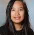

This website was created by past students with the goal of teaching future students about metric units of measurement! On this website you can find a total of 5 pages; including some example questions, some blog posts about real life applications, and information about prefixes, volume, and bases! Begin your journey by clicking the three horizontal lines!
About Us
We are Calvin, Oliver, and Maddie. This website was made under the direction of Mr. Benson (8th Grade Science Teacher) at Bellevue Christian School. We are all 14 years old, and enjoy different things. Oliver enjoys art, chess, and fencing. Calvin enjoys skiing, reading, and math. Maddie enjoys swimming, reading, and art. We all live in Seattle, Washington.
